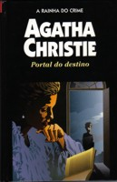

Portal do Destino
Postern of Fate
Tommy e Tuppence estão aposentados e decidem gozar a velhice em uma mansão na tranqüila cidade de Devonshire. Um dia, arrumando o sótão, descobrem num velho livro infantil o relato de um misterioso assassinato ocorrido na cidade durante a guerra. A vítima estaria envolvida em um escândalo de espionagem e teria passado segredos sobre a Marinha inglesa. Eles começam a investigar e descobrem que havia alguém interessado em que o caso não fosse reaberto. Agora, estão com a vida por um fio.